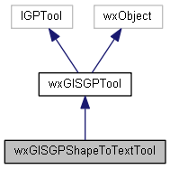
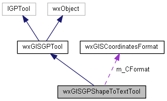
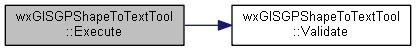
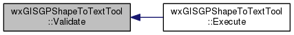

|
|
Version: 0.6.0 |


wxGISGPShapeToTextTool Class Reference
The geoprocessing tool write shape cordinates to text file. More...
#include <gpshapetotexttool.h>
Inheritance diagram for wxGISGPShapeToTextTool:

Collaboration diagram for wxGISGPShapeToTextTool:

Public Member Functions | |
| virtual const wxString | GetDisplayName (void) |
| virtual const wxString | GetName (void) |
| virtual const wxString | GetCategory (void) |
| virtual bool | Execute (ITrackCancel *pTrackCancel) |
| virtual bool | Validate (void) |
| virtual GPParameters | GetParameterInfo (void) |
 Public Member Functions inherited from wxGISGPTool Public Member Functions inherited from wxGISGPTool | |
| wxGISGPTool (void) | |
| virtual | ~wxGISGPTool (void) |
| virtual void | SetCatalog (IGxCatalog *pCatalog) |
| virtual IGxCatalog *const | GetCatalog (void) |
| virtual const wxString | GetAsString (void) |
| virtual bool | SetFromString (const wxString &sParams) |
| virtual void | Copy (IGPTool *const pTool) |
Protected Attributes | |
| wxArrayString | m_asCoordsMask |
| bool | m_bEmptyCoordsMask |
| wxGISCoordinatesFormat | m_CFormat |
| Protected Attributes inherited from wxGISGPTool | |
| GPParameters | m_paParam |
| IGxCatalog * | m_pCatalog |
Detailed Description
The geoprocessing tool write shape cordinates to text file.
Member Function Documentation
|
virtual |
This function call from task manager than task is started.
- Parameters
-
pTrackCancel The pointer to the ITrackCancel which get status meesages, done percent and indicating, that tool should stop execution than user cancel it
- Returns
- true on success and false if failed
Implements wxGISGPTool.
Here is the call graph for this function:

|
virtual |
Returns tool category name. This is used in add tool to the toolbox dialog
Implements wxGISGPTool.
|
virtual |
Returns tool name for display in UI
Implements wxGISGPTool.
|
virtual |
Returns uniq tool name for internal use
Implements wxGISGPTool.
|
virtual |
Returns tool parameters
Implements wxGISGPTool.
|
virtual |
Returns true if tool parameters are valid
Implements wxGISGPTool.
Here is the caller graph for this function:

The documentation for this class was generated from the following files:
- /home/bishop/work/projects/nextgismanager/include/wxgis/geoprocessing/gpshapetotexttool.h
- /home/bishop/work/projects/nextgismanager/src/geoprocessing/gpshapetotexttool.cpp
- Generated on Fri Sep 26 2014 01:11:02 for ngm by
 1.8.6
1.8.6